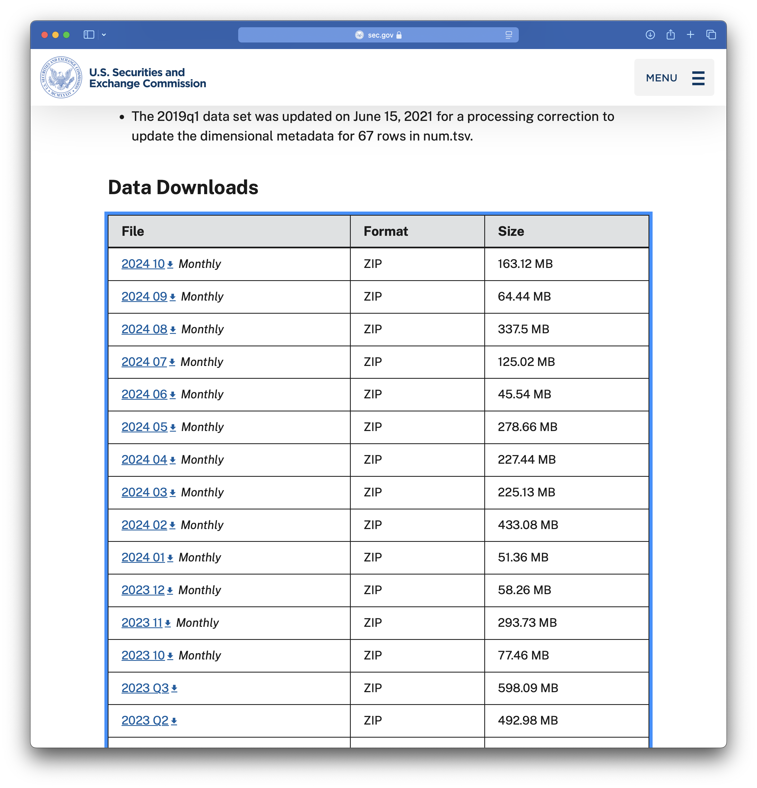
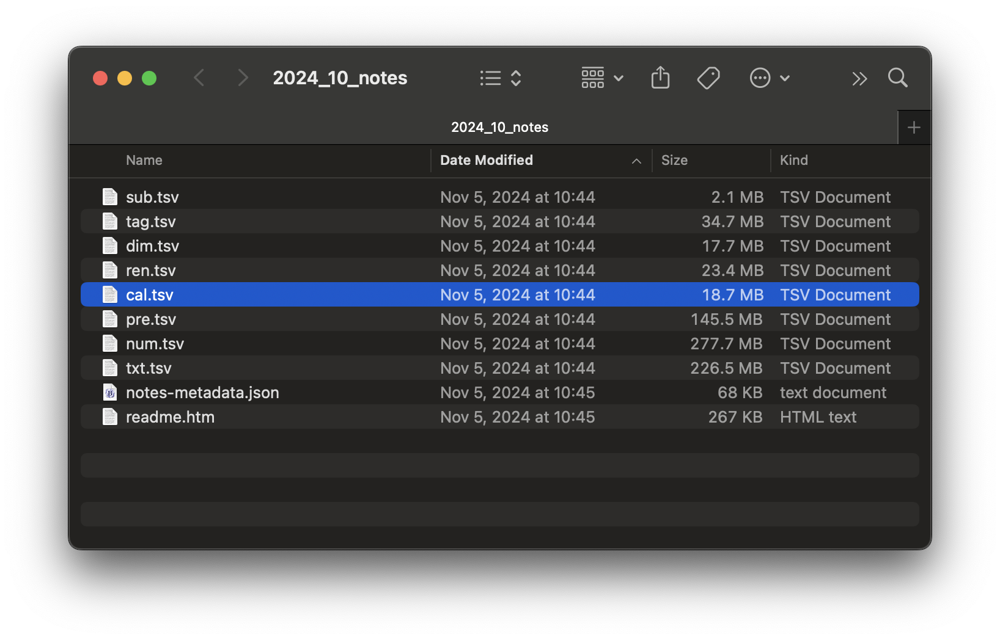

library(tidyverse)
library(DBI)
library(farr)
library(httr2)
library(rvest)
library(arrow)Getting SEC EDGAR XBRL data
In a recent note, I used XBRL data to identify potentially missing Form AP filings. In writing that note, I used two data sources: SEC EDGAR for the XBRL data and the PCAOB website for the Form AP data. However, I provided no real information on how to get the XBRL data from SEC EDGAR. This note aims to provide this missing information.1
This note was written using Quarto and compiled with RStudio, an integrated development environment (IDE) for working with R. The source code for this note is available here and the latest version of this PDF is here.
This note uses the following R packages:2
1 Getting Financial Statement and Notes files
There are two XBRL bulk data sets made available on SEC EDGAR: the Financial Statements and Financial Statement and Notes data sets, with the latter being roughly ten times as large as the former. For the task considered in the note discussed above, we needed the Financial Statement and Notes data set, so I focus on that data set here.
1.1 Structure of processed data
The Financial Statement and Notes data library comprises seven tables:
tagcontains all standard taxonomy tags (not just those appearing in submissions to date) and all custom taxonomy tags defined in the submissions. The standard tags are derived from taxonomies in the SEC’s standard taxonomies file as of the date of submission.dimcontains all of the combinations of XBRL axis and member used to tag any submission.numcontains numeric data, one row per data point in the financial statements.txtcontains non-numeric data, one row per data point in the financial statements.rensummarizes for each filing the data provided by filers about each presentation group as defined in EDGAR filer manual.precontains one row for each line of the financial statements tagged by the filer.calcontains one row for each calculation relationship (“arc”). Note that XBRL allows a parent element to have more than one distinct set of arcs for a given parent element, thus the rationale for distinct fields for the group and the arc.3
1.2 Structure of unprocessed data
If you visit the Financial Statement and Notes site, you will see something like the table partially seen in Figure 1. This table provides links to many ZIP files. The last year or so of data are found in monthly data files and earlier periods are found in quarterly data files. Each data file is found using a link provided in the table.

I start with the 2024_10 file, the link to which points to a file named 2024_10_notes.zip. We can download that file and extract its contents, which are depicted in Figure 2. It seems that each of the data tables discussed above is found in an eponymous .tsv file.

2024_10_notes.zip
I start with sub.tsv and I repeat the download steps for the .zip file programmatically. To programmatically download data from SEC EDGAR, you will need to set HTTPUserAgent to your email address by running code like the following in R.
options(HTTPUserAgent = "your_name@email_provider.com")While we are on the topic of setting variables that are user-specific, we will later store data in a subdirectory of a directory that is identified by the environment variable DATA_DIR. I set DATA_DIR to a folder named pq_data inside my Dropbox location. You should run the following code but with a destination that is convenient for you.
Sys.setenv(DATA_DIR = "~/Dropbox/pq_data")Having set HTTPUserAgent, I begin by downloading the file for October 2024.
file <- "2024_10_notes.zip"
url <- str_c("https://www.sec.gov/files/dera/data/",
"financial-statement-notes-data-sets/", file)
t <- "../data/2024_10_notes.zip"
download.file(url, t)We can start by simply applying read_tsv() to this file.4
sub <- read_tsv(unz(t, "sub.tsv"))Warning: One or more parsing issues, call `problems()` on your data frame for details,
e.g.:
dat <- vroom(...)
problems(dat)Rows: 7117 Columns: 40
── Column specification ────────────────────────────────────────────────────────
Delimiter: "\t"
chr (26): adsh, name, sic, countryba, stprba, cityba, zipba, bas1, bas2, ba...
dbl (12): cik, changed, wksi, period, fy, filed, prevrpt, detail, nciks, pu...
lgl (1): floataxis
dttm (1): accepted
ℹ Use `spec()` to retrieve the full column specification for this data.
ℹ Specify the column types or set `show_col_types = FALSE` to quiet this message.Alas, we see problems. What’s the cause? Let’s follow the prompt and use problems() to investigate.
problems(sub)# A tibble: 1 × 5
row col expected actual file
<int> <int> <chr> <chr> <chr>
1 1620 39 1/0/T/F/TRUE/FALSE ClassOfStock "" It seems that read_tsv() guessed that column 39 is a logical variable (i.e., TRUE or FALSE), which is inconsistent with the value "ClassOfStock" observed in row 1620. Maybe setting guess_max to a higher value will help.
sub <- read_tsv(unz(t, "sub.tsv"), guess_max = 10000)Rows: 7117 Columns: 40
── Column specification ────────────────────────────────────────────────────────
Delimiter: "\t"
chr (27): adsh, name, sic, countryba, stprba, cityba, zipba, bas1, bas2, ba...
dbl (12): cik, changed, wksi, period, fy, filed, prevrpt, detail, nciks, pu...
dttm (1): accepted
ℹ Use `spec()` to retrieve the full column specification for this data.
ℹ Specify the column types or set `show_col_types = FALSE` to quiet this message.OK, no problems now. What are the types of each column? Here I apply a small function first_class() to sub to find out.5
first_class <- function(x) {
class(x)[[1]]
}
unlist(map(sub, first_class)) adsh cik name sic countryba stprba
"character" "numeric" "character" "character" "character" "character"
cityba zipba bas1 bas2 baph countryma
"character" "character" "character" "character" "character" "character"
stprma cityma zipma mas1 mas2 countryinc
"character" "character" "character" "character" "character" "character"
stprinc ein former changed afs wksi
"character" "character" "character" "numeric" "character" "numeric"
fye form period fy fp filed
"character" "character" "numeric" "numeric" "character" "numeric"
accepted prevrpt detail instance nciks aciks
"POSIXct" "numeric" "numeric" "character" "numeric" "character"
pubfloatusd floatdate floataxis floatmems
"numeric" "numeric" "character" "numeric" table(unlist(map(sub, first_class)))
character numeric POSIXct
27 12 1 While most columns are either character or numeric, the accepted column is read as a date-time (POSIXct).
The read_tsv() function has a col_types argument that allows us to “use a compact string representation where each character represents one column” as follows:
- c = character
- i = integer
- n = number
- d = double
- l = logical
- f = factor
- D = date
- T = date time
- t = time
- ? = guess
- _ or - = skip
The following get_coltypes_str() function creates a string that we can use to specify column types when calling read_tsv().6
get_coltypes_str <- function(df) {
type_to_str <- function(col) {
case_when(col == "character" ~ "c",
col == "logical" ~ "l",
col == "numeric" ~ "d",
col == "POSIXct" ~ "T",
.default = "c")
}
res <-
tibble(type = unlist(map(sub, first_class))) |>
mutate(col_type = type_to_str(type))
paste(res$col_type, collapse = "")
}
get_coltypes_str(sub)[1] "cdcccccccccccccccccccdcdccddcdTddcdcddcd"Even though read_tsv() is able to guess most types, it is generally best to look at the data. In this case, we can see that four columns are actually dates coded as numbers of the form yyyymmdd.
sub |>
select(changed, filed, period, floatdate) |>
arrange(floatdate)# A tibble: 7,117 × 4
changed filed period floatdate
<dbl> <dbl> <dbl> <dbl>
1 20050502 20241004 20221231 20220630
2 20080808 20241002 20240531 20221130
3 20220308 20241028 20231231 20221231
4 NA 20241009 20240731 20230131
5 20101025 20241029 20230731 20230131
6 NA 20241029 20240731 20230131
7 20120910 20241029 20240731 20230131
8 20101025 20241031 20230731 20230131
9 20030416 20241029 20230930 20230331
10 20001117 20241002 20231231 20230630
# ℹ 7,107 more rowsIn the following code, I use ymd() to convert these four variables into dates. I also read accepted initially as a character variable and use ymd_hms() from the lubridate package to convert it to a date-time.7
sub <-
read_tsv(unz(t, "sub.tsv"),
col_types = "cdcccccccccccccccccccdcdccddcdcddcdcddcd") |>
mutate(across(c(changed, filed, period, floatdate), ymd),
across(accepted, ymd_hms))Finally I create a DuckDB instance and copy the data frame sub to DuckDB, giving it the name sub_notes.
db <- dbConnect(duckdb::duckdb())
sub |>
copy_to(db, df = _, name = "sub_notes", overwrite = TRUE)Finally, I create a parquet file by exporting the data from the DuckDB table I just created. I then disconnect from the database, as I no longer need it.
period <- str_replace(basename(t), "^(.*)_notes.*$", "\\1")
pq_dir <- file.path(Sys.getenv("DATA_DIR"), "dera_notes")
pq_file <- file.path(pq_dir, str_c("sub_notes_", period, ".parquet"))
dbExecute(db, str_c("COPY sub_notes TO '", pq_file, "'"))[1] 7117dbDisconnect(db)I then do similar work for the remaining tables (dim, num, txt, ren, pre, and cal). I then put all of this inside a function get_notes_data(file) that downloads a .zip file and creates parquet files for each table. I can load this function by running the following code:
source(str_c("https://raw.githubusercontent.com/iangow/",
"notes/refs/heads/main/published/get_dera_functions.R"))This code also loads the function get_zip_files_df() that can be used to get the list of .zip files shown on SEC website.
zip_files <- get_zip_files_df()
zip_files# A tibble: 77 × 2
file last_modified
<chr> <chr>
1 2026_01_notes.zip Wed, 04 Feb 2026 17:27:33 GMT
2 2025_12_notes.zip Wed, 14 Jan 2026 20:59:24 GMT
3 2025_11_notes.zip Thu, 15 Jan 2026 14:09:07 GMT
4 2025_10_notes.zip Mon, 01 Dec 2025 14:48:45 GMT
5 2025_09_notes.zip Tue, 18 Nov 2025 21:32:32 GMT
6 2025_08_notes.zip Wed, 03 Sep 2025 16:10:15 GMT
7 2025_07_notes.zip Tue, 05 Aug 2025 16:57:51 GMT
8 2025_06_notes.zip Thu, 03 Jul 2025 18:46:28 GMT
9 2025_05_notes.zip Tue, 03 Jun 2025 11:09:16 GMT
10 2025_04_notes.zip Wed, 07 May 2025 17:47:37 GMT
# ℹ 67 more rowsNext, I can apply the function get_notes_data() to each file in zip_files using map():
map(zip_files$file, get_notes_data)Doing this takes me a bit under 38 minutes.8 The resulting files take up about 39 GB of space, likely representing about 10 times that in terms of raw data due to compression.
1.3 Doing incremental updates
While 38 minutes is a reasonable amount of time to download hundreds of gigabytes of data, it is not something that we would want to repeat on a regular basis. The astute reader will note that the last_modified field of zip_files contains information on the date on which the applicable file was modified. It seems we could use this information to limit ourselves to files that have been added or modified since we last updated the data.
In the past I have use three different approaches to this kind of problem:
- Storing
last_modifieddata in the metadata of parquet files containing the data. - Modifying the file properties of the data file to match the
last_modifieddata. - Saving a table containing
last_modifieddata that can be compared with the current data to identify files that need to be downloaded.
Of these three approaches, the first is probably the most robust because the last_modified information is part of the parquet file itself. I use this first approach in wrds_update_pq() in two Python packages, wrds2pg and db2pq. The second approach also collocates the information with the file, but is perhaps a little less robust. I use this approach in wrds_update_csv() in wrds2pg because the output files are CSV files where there is no place to store metadata.
Here I will use the third approach just because it is simpler. However it is a little less robust. For example, if the download process is interrupted or the data files are moved around, the value of a directory-level file with last_modified might be limited.
I start by loading a file called last_modified.parquet in the parquet data directory if one exists. The first time you run the code, there will be no such file and I create an empty data frame last_modified in that case.
pq_dir <- file.path(Sys.getenv("DATA_DIR"), "dera_notes")
pq_path <- file.path(pq_dir, "last_modified.parquet")
if (file.exists(pq_path)) {
last_modified <- arrow::read_parquet(pq_path)
} else {
last_modified <- tibble(file = NA, last_modified = NA)
}I then compare zip_files with last_modified to identify files on SEC EDGAR with a different modification date from that recorded in last_modified. These are the files that we will want to download and we store the list of such files in the data frame to_update.
to_update <-
zip_files |>
left_join(last_modified,
by = "file",
suffix = c("_new", "_old")) |>
filter(is.na(last_modified_old) |
last_modified_new != last_modified_old)Now I can apply get_notes_data() to the files in to_update.
map(to_update$file, get_notes_data)Having updated the files, we now save the data in zip_files as the new copy of last_updated. This new last_updated.parquet will be used the next time we update the data.
save_parquet <- function(df, name) {
file_path <- file.path(pq_dir, paste0(name, ".parquet"))
arrow::write_parquet(df, sink = file_path)
}
zip_files |>
save_parquet(name = "last_modified")According to the SEC EDGAR website, “effective March 2024, monthly data sets will be consolidated into quarterly files after a year, so that only a year of monthly files will be available at a time.” This will mean that monthly files will become obsolete after about a year and presumably need to be deleted to avoid duplicating data in quarterly files. A subsequent update to this note will discuss how we can identify and delete obsolete files.
2 Using Financial Statement and Notes data
Now that we have downloaded the data, we can access it quite easily using DuckDB and the load_parquet() function from the farr library.9 Note that while the tables are split across several files, these are easily combined using wildcards in DuckDB. For example, sub_notes_* can be used to refer to all files that make up the submission data (sub table). As can be seen, working with parquet files using DuckDB is generally very fast.
db <- dbConnect(duckdb::duckdb())
sub <- load_parquet(db, "sub_notes_*", schema = "dera_notes")
sub |>
mutate(year = year(filed)) |>
count(year) |>
arrange(desc(year)) |>
collect() |>
system_time() user system elapsed
0.042 0.019 0.035 # A tibble: 18 × 2
year n
<dbl> <dbl>
1 2026 5428
2 2025 99208
3 2024 194501
4 2023 104015
5 2022 97814
6 2021 82740
7 2020 60923
8 2019 35040
9 2018 26396
10 2017 26557
11 2016 34431
12 2015 29906
13 2014 31219
14 2013 31798
15 2012 32755
16 2011 18337
17 2010 3914
18 2009 951Footnotes
Guidance on downloading the Form AP data is provided in an earlier note I wrote.↩︎
To install these packages, run
install.packages(c(tidyverse, "DBI", "farr", "httr2", "rvest", "arrow")in the console of RStudio.↩︎Run
source("https://raw.githubusercontent.com/iangow/notes/refs/heads/main/get_dera_notes.R")to get these data.↩︎Using
unz(t, "sub.tsv")allows us to unzip just that one file in a way that does not leave detritus in our file system.↩︎I use
first_class()to get just the first class for each column as one column has two classes associated with it. You can see this by runningunlist(map, sub, class))and comparing the output with that from the code I use below.↩︎This function only handles a subset of the types that might be identified by
read_tsv(), but it suffices for current purposes.↩︎I do not recall why I chose this option, but it may have been that the automatic type detection and conversion did not work with all files and setting it explicitly works best.↩︎
Obviously the time taken will depend on the speed of your internet connection and your “distance” from the SEC EDGAR server.↩︎
The
farrpackage was originally created to supplement the book by me and Tony Ding, Empirical Research in Accounting: Tools and Methods.↩︎